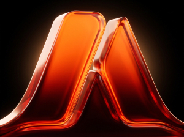

Seu projeto precisaestar alinhado comseu propósito
Transforme a forma como sua marca é percebida, comunique o valor do que você oferece e atraia clientes que reconhecem o que sua empresa realmente vale.


Desde 2022
no design
40 a 60
criativos por dia útil em rotina de agência
2500
projetos entregues